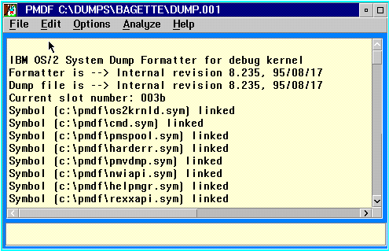

PMDF offers a number of facilities from its pull-down menus and also from the mouse buttons.
From the Keyboard Ctrl-C and Esc serve to interrupt the Dump Formatter.
Warning:
Do not use the Dump Formatter Q command. Under PMDF this may cause PMDF to hang. To terminate the Dump Formatter either quit PMDF from the system menu or select another dump for processing.
The PMDF screen appears as follows: